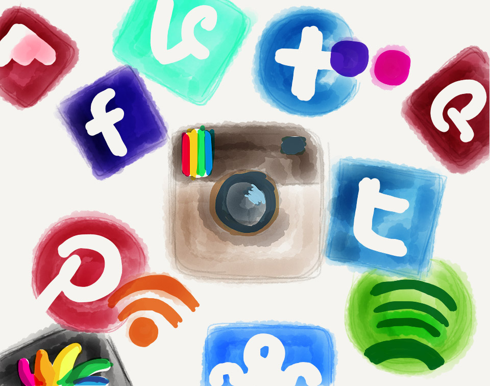

Facebook, YouTube, Twitter, LinkedIn, Google+, Tumblr, Skype, Reddit, and many more, are various tools that are used for entertainment, communicating with others, conducting business and other activities.
The most popular social media site right now is Facebook, and Twitter is the second most popular social media site.
Back